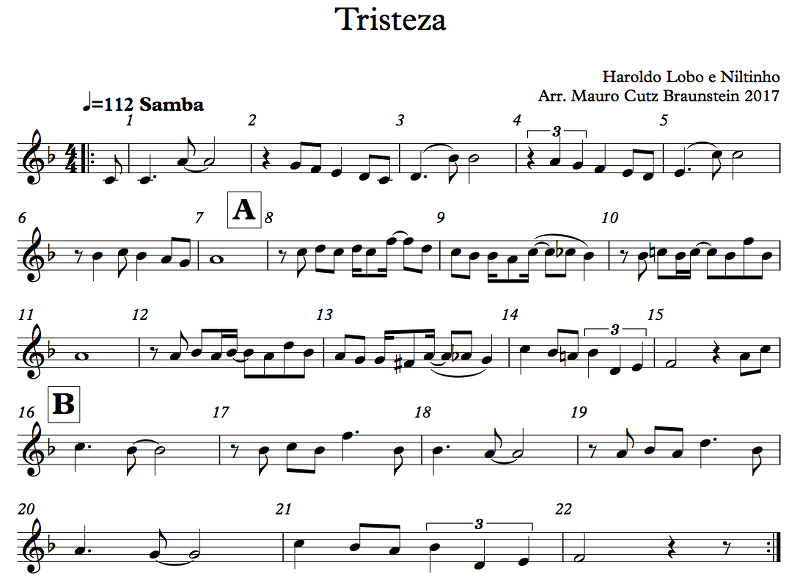
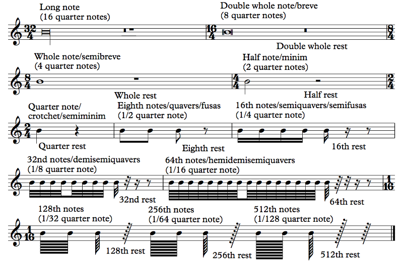
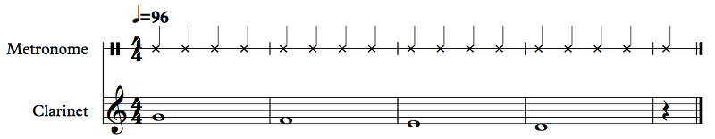
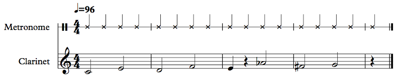
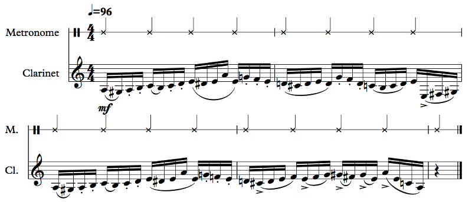
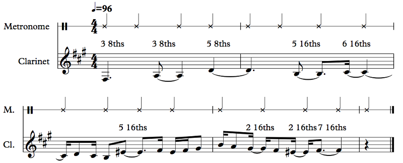

OFFTONIC THEORY — Chapter 1: The Basics
1.4 Rhythm Notation
Now that you know how to read notes, let's learn how to read rhythms. Rhythm just refers to timing: when to start and stop playing/singing a note. Before I explain how to read rhythms, let's have an example, shall we?
Example 1.7
What the... Why did it play twice?
There's a lot to digest here, isn't there? Well, bear with me and we'll go through it slowly. You should almost be able to play this on the Offtonic Keyboard with what you know (though you probably won't do it very well the first time...). There are a few things I haven't explained yet, though, so let's talk about them!
First, let's go over the notes. We have some new things here. The first new thing is the little flat next to the treble clef. We call these accidentals next to the clef the key signature, and what that means is that, unless you're told otherwise, every B is flat, in any octave. See how the flat is on the line that's a B (specifically B4)? Even B's elsewhere on the staff, like the B3 below the staff or the B5 above, are flat.
Now, when you do see an accidental in the music, like that Cb at measure 9, it applies only for the rest of the measure, so if you see a C in a different measure, it's back to being C natural. Of course, musicians are likely to forget this, so my music notation program, Sibelius, puts a natural on the C the next measure anyway, just to remind the reader. (I could disable that if I want, but it's useful so I keep it.) Accidentals do not apply to notes in other octaves, so that flat in measure 9 applies only to C5, not C4's or C6's that may occur later that same measure. However, this can be confusing, so it's best to mark those if they do come up. Anyway, now you should be able to at least read every note in the music.
What's all that text at the top?
At the very top you have "Tristeza", which is the title of the piece. It means "sadness".
But it's such a happy-sounding song!
I know! I love it! It's one of my all-time favorite songs. The words in Portuguese are the singer asking sadness to go away, and the song sounds so happy because the singer is trying to make it go away by singing a happy-sounding song. I'm not sure it actually works. I think it ends up being even sadder because of that. Haroldo Lobo and Niltinho, the composers, did a wonderful job — actually, the song as originally written by Niltinho was much longer, but Haroldo came along and "fixed" it to be a Carnaval hit in the 1950's. That's their names in the composer credit on the top right. My name comes below, since I arranged it for you here. Arranging a song means rewriting it but keeping the important aspects of the composition: these days you might call it a remix. By the way, you'll be seeing more of this song later on; it has a lot more to teach us.
In the top left you have your tempo marking. There are a few ways of notating that; the simplest is to just describe how you want the piece to feel. Traditionally these directions are in Italian. Tempo markings include Largo, meaning very slow, Adagio, meaning slow, Andante, meaning walking speed, Moderato, meaning moderately fast, Allegro, meaning fast, and Presto, meaning very fast. These tempi (plural of tempo, but "tempos" works too) are up to interpretation. How fast is Allegro, exactly? It will depend on the music. For example, I've heard the Finale to Dmitri Shostakovich's Symphony No. 5 done very quickly, so it felt rushed, and very slowly, so it felt like the air turned to molasses (no offense to victims of the 1919 Molasses Disaster here in Boston). Both conductors probably thought they were following the score (that's where all of the different instrumental parts are written, which the conductor usually looks at while conducting).
These days, though, it's quite common to offer a metronome marking. In this case, I wrote quarter = 112, so the quarter note beat happens 112 times per minute. You can use a metronome to figure out how fast that is. A metronome is a little pendulum with an adjustable weight on it that clicks each time the pendulum swings, but these days people use electronic metronomes instead. Here's the Offtonic Metronome:
Other options include "112 BPM", meaning 112 beats per minute, or "M.M. = 112", which stands for "Metronome Marking", but I find the quarter note is most obvious to readers, especially because the unit of tempo may well be something else: an eighth note, a dotted quarter or dotted half, etc.
Wait... dotted?
The dot actually just means that the note gets its value and a half, so if a half note is worth two quarter notes, a dotted half note is worth three. Actually, we'll get to this in depth in just a bit.
Another thing you may have wondered about in Tristeza are the big letter A at measure 8 and the big letter B at measure 16.
Actually, yeah, what's up with those?
These are rehearsal letters. Most music doesn't have all these measure numbers because they clutter up the score, so instead it will have rehearsal numbers or letters. The point of these is to just mark spots on the music. The conductor can then call out "start 4 before letter F", and everyone will be able to find letter F on their own music and count back four measures. Arguably we don't need rehearsal letters in this short example, but I figured you should see them. Some people use numbers in boxes instead of letters, so there's rehearsal number 1, rehearsal number 2, etc. Other people use measure numbers in boxes, so instead of A and B, we'd have 8 and 16 in the boxes. Some publishers don't actually use boxes; they'll just have the big letter. Sibelius, my notation program, has boxes by default, so there they are.
Speaking about measure numbers... is measure 22 missing an eighth note? And what's up with measure 1? Actually, what the hell is up with measure 1? The first measure only has one eighth note, and measure 1 is the next measure? What?
You noticed! We'll talk about how to count these in just a bit, but that lone eighth note before measure 1 is called a pickup. Since the first measure starts with an eighth note pickup, the last measure is missing an eighth note. You don't have to do that, but since I have a repeat sign, I figured I might as well demonstrate it.
Repeat sign?
Ah, yeah, see the thick double bar line at the end with the two dots? That's a repeat sign. It means to repeat the music from the matching sign earlier, or from the beginning if there isn't one. There is one; it's right after the 4/4 at the start. That's a start repeat sign, and the one at the end is an end repeat sign. That's why the recording (which is synthesized, by the way; I didn't play that myself, if you hadn't noticed) repeats.
I think there's only one bit of that example that we haven't covered yet. See that curved line at measure 1? That's a tie. It means that you don't hit the second note; you just keep holding the first note. On the other hand, see the curved line at measure 3? That's a slur, not a tie. It means to play the things under the slur in a connected way. We'll talk about what that means later, but notice that the tie is always between two notes of the same pitch, while the slur can connect as many notes as you want. If you want to connect three notes of the same pitch, you'll have to use two ties. If you look at measure 13, you can see both a slur and a tie at the same time.
I think that's actually it for Example 1.7. So let's actually talk about rhythm notation, shall we?
Example 1.8
Whoa that's weird.
I think it's safe to say that you'll never see most of this, so let's start where it matters: the whole note. Most music is written in time signatures with a 4 on the bottom. You'll recall that a time signature like 8/4 means 8 beats, where each beat is a quarter note. Something like 4/2 would mean four beats, where each beat is a half note. Well, a whole note is worth four quarter notes — the American names are all just fractions of the whole note, which makes sense — so, if the quarter note is the beat, the whole note gets four beats. Next to it is the whole rest, which is when you shut up for four beats. (Actually, saying "four beats" is a bit misleading, but I'll show you later on.) Now, Americans have neat names for these notes, but elsewhere in the world people use other names. The whole note is called semibreve in those places.
Wait, so the whole note is four beats long, but it's only half of a breve, which means "short"? How does this make sense?
Good question. Over the course of the 16th century or so, people started subdividing music differently. If you look at music by Byrd or Monteverdi, you may see that for them, the beat was the whole note. Byrd didn't even use time signatures or measures (at least in stuff I've sung). It was just the music. But by the 17th century, people were writing in 4/4, with the quarter note as the beat instead of the whole note, and that's where we are now. So while the double whole note (also known as breve) and the long note are very, very rarely used today (I've seen double whole notes in music, but never a long note), that wasn't always the case, and the names stuck.
Next is the half note (aka minim), which is two quarter note beats. Note the appearance of these notes and rests. The whole note is a big not-filled-in notehead with no stem; the half note is a normal-sized not-filled-in notehead with a stem. It's easy to confuse their rests: the whole rest hangs down from the fourth line, while the half rest pokes up from the third line. The double whole rest (which you do see, occasionally) takes up an entire bit of the third space.
That's a little confusing...
Yeah. The way I was taught is that the half rest looks like a hat. "Half" and "hat" are similar words, so it's easier to remember. By the way, when there's a rest for an entire measure, that rest is usually a whole rest no matter how long the measure actually is. Like, a measure of 1/16 (that's only 1/4 of a quarter note long) would still have a whole rest to indicate a rest for the entire measure. The only exception is a measure that's exactly the length of a double whole note, in which case it gets a double whole rest (so 8/4 or, more commonly, 4/2).
The quarter note is easy. Brits call it a crotchet, and elsewhere in Europe it's a semiminim, being half of a minim. In music with a 4 at the bottom of the time signature, it's just one beat. The quarter note is the most basic note we use today. It's a filled-in notehead with a stem. The quarter rest is just a squiggle. Good luck learning to draw it. (For that matter, good luck learning to draw a G clef; my tip is to start from the middle.) The weird thing about the quarter rest is that sometimes, not often but sometimes, a publisher will use a different symbol for it: a backwards eighth rest. The eighth rest opens to the left, as you can see; the quarter rest looks the same but opens to the right instead. Again, it's uncommon, and I don't think Sibelius even has that symbol so I'm not going to bother with it, but just know about it in case it does come up someday.
Starting with the eighth note, which Brits call a quaver and others call a fusa, the notes start having little lines coming off of them. The eighth note has one line (and the eighth rest has one line). The eighth note is half of a quarter note, so usually it's half a beat, meaning that two eighth notes together make one beat.
Does the little line connect to the next note or just hang off?
When it connects it's called a beam; when it just hangs there it's called a flag. There is no difference between them in terms of note length, but beaming notes together is used to visually indicate a unit. When you look at the two eighth notes, you immediately recognize that this is a beat. If you take a look at example 1.7, you can see how beats are specified very cleanly through the beaming of the notes.
Do rests get beams too?
Not usually. You'll never see rests beamed like notes, but sometimes you'll see a beam group with a note missing where a rest is. That's just to make things easier to read. When it comes up I'll show you.
Next are the 16th notes, also known as semiquavers in Britain and semifusas in Europe. They get two flags/beams, and the 16th rest similarly has two flags. They're usually 4 to a beat. These can get pretty fast in fast-paced music. You should be able to read these pretty well. In fact, you should be able to read any reasonable combination of rhythms from whole notes to 16th notes pretty well. I'll give you some examples later once we cover a few more details.
Then, we have 32nd notes (demisemiquavers), with three beams or flags (and the 32nd rest has three flags). There are 8 of these to a quarter note. They're actually pretty rare, mostly because they're usually just too fast. That's not always the case. In slow music, especially in music where the 8th note gets the beat, these come up. There are a few other situations, too, and I'll show you some of them. This example is note-able (HA) because of the secondary beaming. See how the eight 32nd notes are in two groups of four, with a single beam between them? That's to make it easier to read. This kind of thing happens often, so don't be confused. You only need the right number of beams in one direction. In fact, you could even have the beam not connect to anything else (see the 16th notes in example 1.7, measure 8).
You may actually see 64th notes, very, very, very rarely. If you do, it's probably some sort of run, which is where you play a lot of notes in a scale (we'll talk about scales later in a lot of depth) really quickly, like running your hand across a piano. 64th notes have four beams/flags. It's hard to count the flags. But they have a really cool British name: hemidemisemiquavers! On the other hand, you will probably never see 128th notes in real life. I have no idea why Sibelius even included them. Same with 256th notes and 512th notes. Maybe they're useful for some special effect of notation or something, because they're definitely no good for actually playing. However, once you understand the way these note divisions work — each division is in half, and when you cut a note in half it gets a beam or a flag — then you can figure them out if they ever do come up. Which they won't.
Let's hear a little bit about how each of these kinds of notes sound.
Example 1.9
These are whole notes. I also want you to notice a few other things. First, I have the instruments arranged in a score: different instruments each have their own staves, and the notes line up vertically since they get played at the same time. This will become more obvious later. Orchestral pieces can have dozens of different lines playing at the same time, so orchestral scores can get quite big! Second, the metronome part uses X noteheads, and the staff has only one line! Well, since it's percussion, there's no need for five lines. There's only one thing you can do and that's click the metronome, so there's no need for more than one line. You see X noteheads when you have stuff that's not supposed to be in pitch — for example, if you have to shout "Hey!" at the end of a piece, it'll probably be shown with an X notehead because there's no specific pitch required, just a shout. Some percussion gets X noteheads, and in this case it's actually just personal preference. I wanted to show you what it looks like. (A half note with an X notehead looks like a circle with an X inside it; maybe one will come up eventually that I can show you.)
Why does the last bar only have one beat in it? Why is it there in the first place?
Hmmm... Interesting question. Listen to the whole notes again. When does the last whole note actually stop?
Sounds like it stops on that last click... but shouldn't the whole note be four beats? Isn't that beat 5?
A proper whole note only stops at the very end of the fourth beat, which is when the fifth beat begins. If you cut off too early, you're actually playing it wrong.
HA. CHAPTER 0. CAUGHT YA!
OK, fine. It's not wrong. It's merely different from what the composer intended, which is a whole fucking note, which you cut off too early because of your fucking artistic vision. Happy?
All right, man, chill.
...Sorry. I got a bit upset. I guess I need to breathe...
Yeah, I was wondering. If you can't cut notes off too early, where are you going to breathe?
Ah, um. Good point. It's not actually an easy question, and as a performer you need to plan this kind of thing out ahead of time. As a composer, you need to make sure there's time to breathe, or at least that your musicians have lungs of steel. Er, not steel, that wouldn't work. I don't know, huge tanks? But in an ensemble, where there are actually many people playing the same thing you're playing, you do something called stagger-breathing. You try to sneak a breath somewhere, even in the middle of a note, at a time when other people aren't breathing, and you do your best to come back in as if you'd never left. This way, your breathing isn't noticeable, and you don't cheat your notes by cutting them off too early. You can actually plan this with the people next to you so that you can mark it in your music.
The important thing to keep in mind is to not breathe at times when people might be tempted to breathe. For example, don't breathe at the end of a whole note. Also, don't breathe at emotional moments in the music, like when things are getting louder or softer, because it can kill the moment if everyone (or even almost everyone) takes a breath at the same time there.
Example 1.10
Half notes! Well, and a quarter note with a quarter rest. That's what half notes sound like. Notice again how the half note actually goes all the way until the third beat. It doesn't stop before it; it's two whole beats.
What's the point of the quarter note?
In part so that you can tell the difference, and in part to give the performer a chance to breathe. I figured that, musically, this was a decent time to take a breath. You should play this on the Offtonic Keyboard (or just sing it) and try out different places to breathe. I happen to like this one, but you might like a different one better! Of course, if you were to do that, you'd be going against what the composer (me) wrote, but don't be afraid to experiment. That's how you write your own music. And if you change my music around, hey, you can just call it an arrangement!
Can't you sue me for copyright infringement, though?
I actually have no idea how this works. I think there's some sort of licensing structure in place, at least in the US. Eh. Call a lawyer? They love this stuff, especially if you pay them.

Example 1.11
That's quarter notes. Nothing too special there, but again, note when they stop: not until the next click.

Example 1.12
Ooh! This is different!
Yep! I decided to mess with the articulation (and kudos to the Sibelius soundset for actually reproducing it pretty well). Also, whoops, I left in that ff. I didn't mean to. But it does make things easier to hear: ff means very loud. We'll talk about dynamics — volume — soon enough. The other stuff is what I want to focus on here.
Now, the clarinet is a wind instrument: you produce sound by blowing into it. Try this: blow some air with your mouth. Now, as you're doing that, put your tongue where the air is coming out. It stops the air, right? Like you're blowing a raspberry? Wind instruments use the tongue as a way of stopping sound. With instruments where you put the mouthpiece inside your mouth — clarinets/saxophones, oboes/bassoons, recorders, that kind of thing — you actually touch the mouthpiece or reed with your tongue to stop the air. With brass instruments and flutes, where nothing goes inside your mouth, you basically just make consonants, like D's and T's and K's depending on what effect you're going for. In any case, you can think of playing a note on a wind instrument as saying "doo". Try blowing and whispering "doo" and you'll see what I mean. The way you use your tongue is called the articulation. Other instruments have other means of articulation. String instruments can sound different depending on how you pluck the string or use the bow. Obviously the voice can sound different depending on your consonant, too!
In music, we usually interpret "articulation" a bit more broadly. What you see here in Example 1.12 are articulation marks. The curved lines are slurs, and that means that you tongue only the first note. The V-like thingy pointing to the right (for example, under the B in the second measure) is called an accent, and it can mean a few different things. You can interpret it as just playing that note a bit louder, or articulating it harder (like with a harder D), or just putting more weight on it. The dot is called a staccato, and it means to play the note short. Conventionally, "short" means half the length, but in practice what this really means is "light": put space between the note and the next, and don't articulate too hard. The little horizontal line is called a tenuto, and it means to play the note full length. Of course, you should already be doing that, right? Well, sometimes you're playing in a style where that's not recommended for whatever reason, but specifically on the tenuto, you should give the notes the full value. Finally, the little hat is a marcato, and it's a cross between a staccato and an accent: keep it short and heavy.
Also, I'm sure you already noticed, but the "M." and "Cl." on the left on the second system are just abbreviations for the instrument names, so if you're reading the score you can keep track of what's what. Oh, and I'm not too worried about holding the eighth note all the way to the end of the beat, but it's something to pay attention to. People usually perform eighth notes short, but there's always the option to make them long (just use the tenuto markings to be sure).
Example 1.13
Not much to say about this one. 16th notes. That's what the sound like. This one has a dynamic marking of mf, meaning medium loud. This is because I made the accents louder. Why? A lot of times, when you have lots of fast notes like here and some of them have accents, you "ghost" the other notes. This is to bring out the accent, and what it means is to play everything that doesn't have the accents much softer so that the accents stand out. Sibelius isn't going to do that automatically so I had to help it along, but I think it did a good job, don't you agree? Try to sing this passage, by the way, and notice that it's actually pretty hard to articulate all those staccato 16th notes. (This is when computers are useful!) On a different instrument, there would be the possibility of double-tonguing, which is when instead of saying "doo doo doo doo" on a note, you actually say "doogoodoogoo". Try saying "doo doo doo doo" (repeatedly, obviously) as fast as you can, then try saying "doogoodoogoo" as fast as you can. Unfortunately, having a mouthpiece in your mouth prevents you from double-tonguing on clarinet (and sounding good — you can still do it, but meh), but this is a very common technique on trumpet — and scatting! Doodoo d'g'd'dah! (There was a feces-related pun in there, if you missed it. Totally intentional.) In fact, on trumpet it's common to do triple-tonguing. Some players suggest TTK (or DDG) as your consonants, but I actually prefer something like TGN, using the tip of my tongue to keep it light. Then again, I don't play trumpet, so.
Let's move on to dots. Dots!

Example 1.14
The rhythm dot makes a note half again as long. The rhythm dot is different from the staccato dot! The staccato dot goes above or below the note (depending on stem direction); the rhythm dot goes next to it. Anyway, the dot adds half the note's value. So a half note, which is two beats, becomes three beats with a dot. A quarter note is one beat; a dotted quarter note is a beat and a half. An eighth note is half a beat; a dotted eighth is 3/4 of a beat. And so on. In larger time signatures, you can have dotted whole notes too, which are worth 6 quarter notes. You can have dotted 16ths. Dotted 32nds (well, not very often). You can have dotted rests too, but we haven't yet gotten to the point where it makes sense to talk about those. We will, though, don't worry.
Why do some of the notes have two dots? Or... three?
The second dot adds half the value of the first dot. So, say you have a half note. The first dot adds half of that, so a quarter note. The second dot adds half of the quarter note, which is an eighth note. The third dot adds half of that, which is a 16th note. I don't think I've ever actually seen a triple dot in practice, but Sibelius supports it so why not? Double dots don't happen very often, but they're not unheard of, especially the double-dotted quarter and the double-dotted eighth.
Actually, pay special attention to the last measure. The first beat has a double-dotted eighth and a 32nd, but the second beat has a regular dotted eighth and a 16th. Can you hear the difference? The dotted eighth 16th rhythm is an extremely common one that you'll see again and again, so it's good to get used to the sound and the feel, especially so that you can get the timing right. You should be neither too early nor too late with the 16th note. Note also in the fourth measure, where beat 1 has a dotted eighth 16th but beat 2 has a 16th followed by a dotted eighth. That beat 2 is a somewhat less common rhythm, but it also comes up often enough that you should know what it feels like.
OK, I know how to make a note that's 3 eighth notes long. That's a dotted quarter note. But how do I make a note that's... 5 eighth notes long? Is that even possible?
Ah, yes! Ties! I'll show you:
Example 1.15
You can create notes as long as you want by using ties. You can tie things over the bar line. You can have multiple notes tied together. A tie takes two adjacent notes (of the same pitch) and turns them into one note. A quarter note tied to a quarter note, for example, is the exact same thing as a half note.
Can you tie rests?
No. It wouldn't make any sense to do that. A rest is when you aren't doing anything, so what would be the difference between doing nothing twice in a row versus doing nothing for longer?
But I've seen a note tied to a rest...
You have, have you? Actually, that happens in percussion music. Normally, a rest means no sound, but for some instruments, especially percussion, you can hit an instrument and let go, and it will still keep making sound for a while. Normally you'd use your hand (or knee or whatever) to stop the sound on the rest, but sometimes the composer wants you to just let it fade away on its own. This is represented with a tie to a rest, and usually "l.v." ("laissez vibrer") or "let ring" is written above it.
Also, there's a weird thing. In the fourth measure, there's a G# 16th note tied to another G# 16th note. Wouldn't it make more sense to just make that a single eighth note? And couldn't the last note of the piece just be a double-dotted quarter?
Yes to the second one; I just thought that this way would be easier to read. But to your first question, there's a very clear reason why I did not write those two G# 16th notes as a single eighth note: it would make it difficult to find the beat divisions. We'll talk more about that later when we get in depth into time signatures, but notice how you can clearly see each beat because the notes in that beat are all beamed together? That's hugely important for readability. You should generally make the beats easy to follow. You can use beaming and carefully-placed ties for the purpose.
Now that you can understand rhythm notation, let's see about actually counting these rhythms, shall we?
Up: Chapter 1: The BasicsPrevious: 1.3 Pitch Notation
Next: 1.5 Counting Rhythms